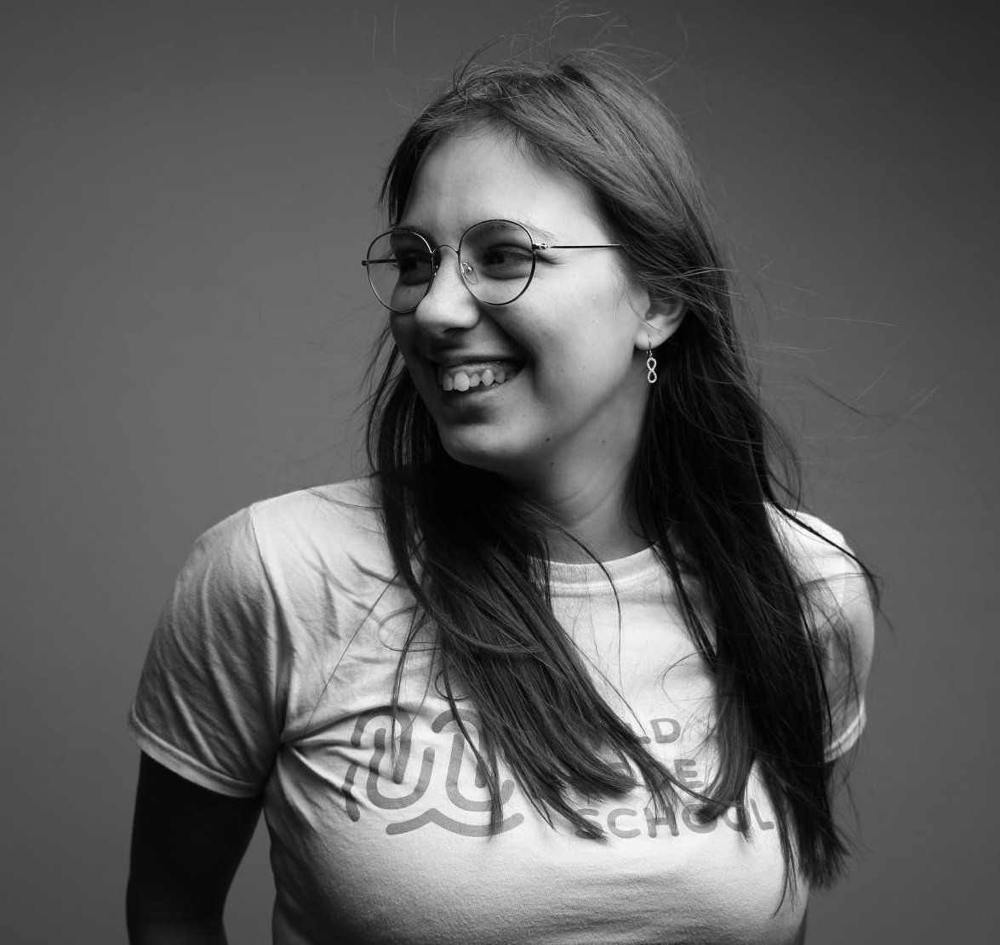

About Me
Je voudrais vous dire à quel point le code à changer ma vie mais ce serait trop long.
Je vais me contenter de vous dire comment j'ai fait et d'où je suis venue.
J'ai 26 ans et j'ai toujours été collée à mon clavier, absorbée par l'écran. Pour écrire pour principalement,
mais aussi pour lire, jouer, créer. J'ai commencé par des blogs, des petits jeux rpgs, des montages, bref
j'avais
besoin de créer.
Travailler aussi fut un besoin les années passants. J'ai donc 10 ans de métiers dans la vente derrière moi, les
techniques de vente et la relation client n'ont aucun secret pour moi. Travailler dans des grands groupes tels
que Camaieu,
Darty ou Dyson furent des experiences riches mais je suis devenue maman d'une octomome
qui à tout changer !
J'avais envie de mieux. On méritait mieux, mais de loin ça ressemblait à des sables mouvants de retourner à
l'école.
J'ai voulu prendre le risque quand même. M'épanouir, faire mieux, révéler mon potentiel et faire un métier dont
je serais
fière; qui allierait mes deux axes de vie : aider / créer. Alors je me suis lancée.
J'ai entrepris cette folle reconversion dans le web. J'ai appris les bases ( HTML/CSS ) seule entre
openclassroom et quelques bouquins. Un peu de programmation en python également. Le plus dur était à venir et
j'avais besoin d'accompagnement alors j'ai appris le reste dans une formation intensive et diplomante à la
Wild Code School.


Solène Mahaut
Développeuse Web Junior